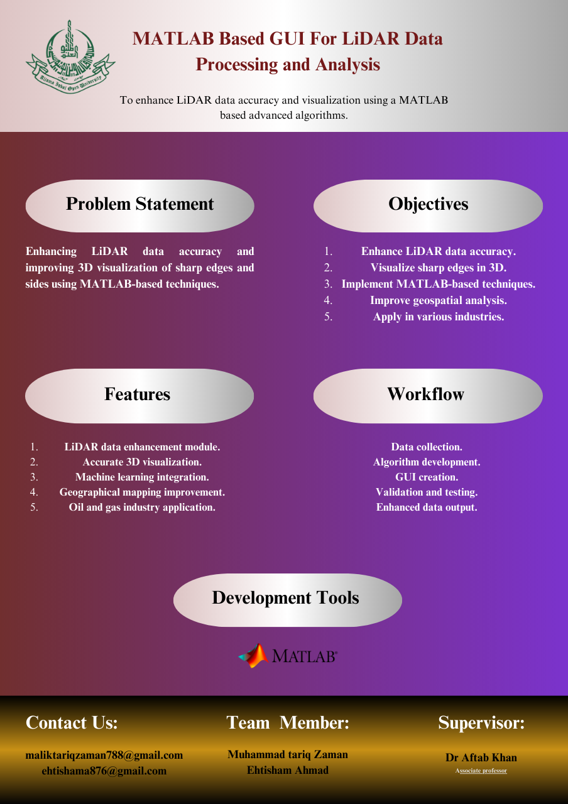
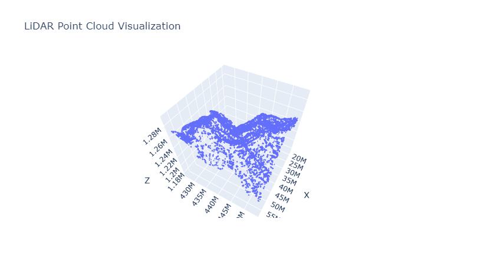
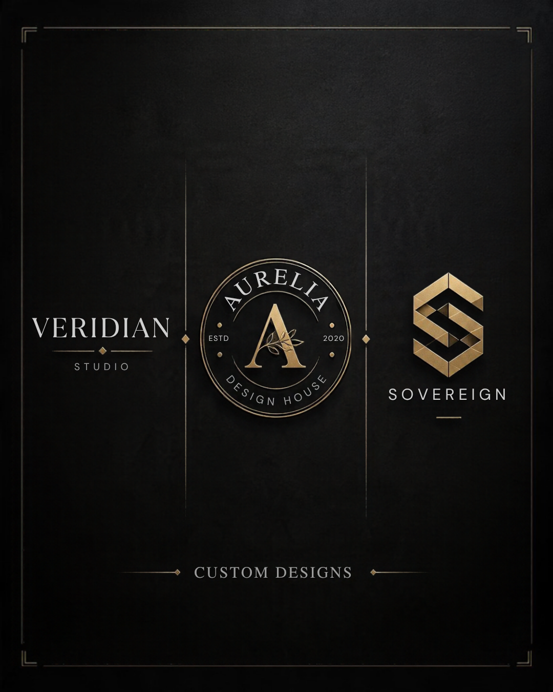
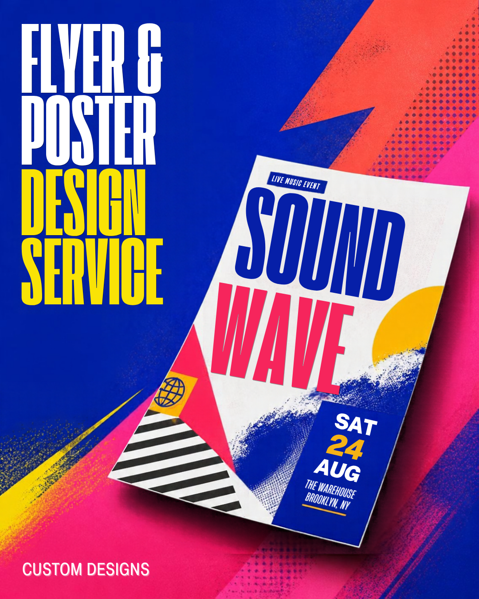
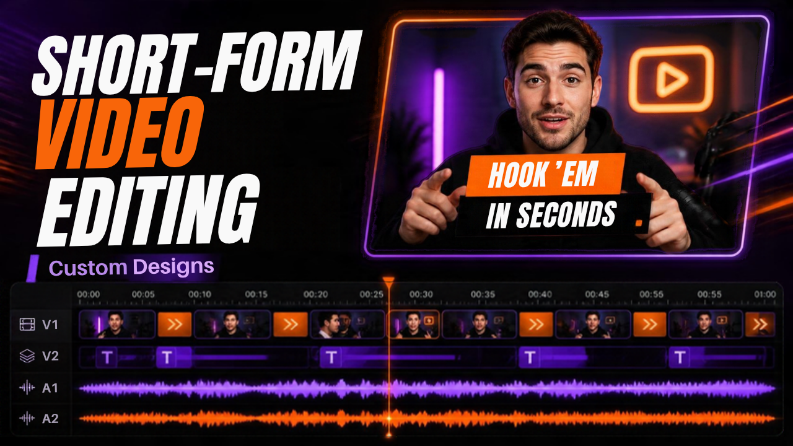
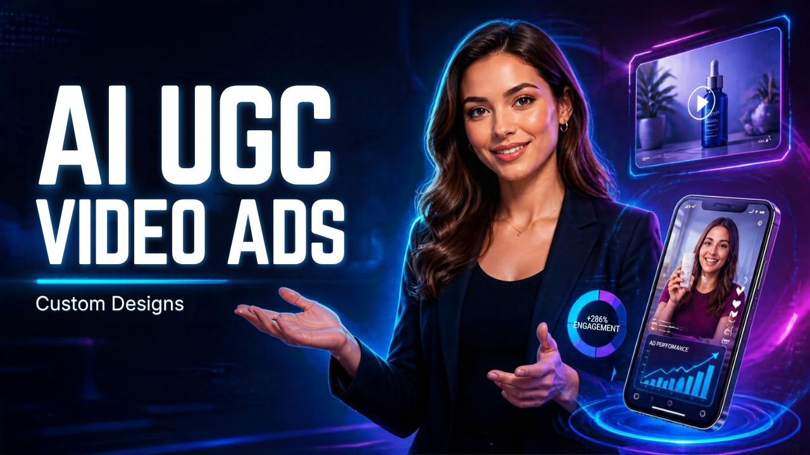
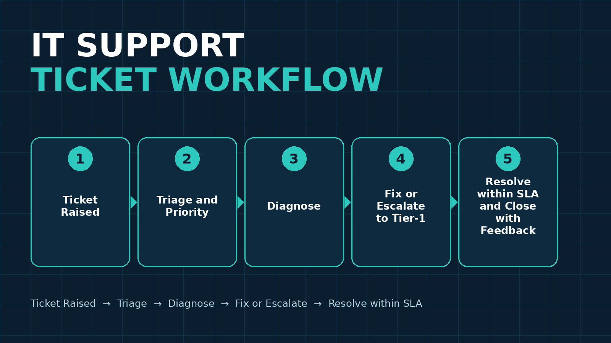

Muhammad Tariq Zaman
IT Support Executive | CCNA | BSCS
IT Support, Networks & Microsoft 365 — Islamabad, Pakistan
Open to Remote & On-site IT Support Roles
LinkedIn · GitHub · mohammadtariqzaman@gmail.com · +92 342 9466788
About
IT Support Executive with 2+ years of relevant IT experience, including ongoing freelance IT support. More than 1,000 support tickets resolved within SLA, covering hardware and software troubleshooting, ticketing, Active Directory, LAN/Wi-Fi/VPN, backups and disk imaging, and IT asset inventory, including cross-border escalations with a Montreal tier-1 team.
Experience
Apr 2026 – Present · Islamabad
On-site IT support deployed at the Hakeem Walee office, Islamabad.
Apr 2025 – Apr 2026
Feb 2024 – Apr 2025 · Islamabad
Education
2019 – 2024 · CGPA 3.42
Skills
TroubleshootingTicketing SystemsMicrosoft 365Active DirectoryNetwork AdministrationIT Asset ManagementEndpoint SecuritySystem BackupsDisk ImagingPythonWindows OS ManagementLAN / Wi-Fi / VPNData AnalyticsStatisticsMachine Learning
Certifications
- CCNA — Cisco
- Google Advanced Data Analytics Professional Certificate — Google, May 2023 (22W6A3MJV46W)
- Go Beyond the Numbers: Translate Data into Insights — Google, May 2023 (8JMWKG794TNH)
- The Power of Statistics — Google, May 2023 (L3XT857TFSEH)
- The Nuts and Bolts of Machine Learning — Google, May 2023 (APG5TFX3QZYE)
- Google Advanced Data Analytics Capstone — Google, May 2023 (58TMMFMBAKBS)
- Coding Interview Preparation — Meta, Apr 2023
- Get Started with Python — Google, Apr 2023
- Regression Analysis: Simplify Complex Data Relationships — Google, May 2023
- Foundations of Data Science — Google, May 2023
- Introduction to Microsoft Excel — Coursera Project Network, Feb 2023
Projects
Final-year project funded by NGIRI, carried out at Allama Iqbal Open University (AIOU). A MATLAB-based graphical user interface for LiDAR data processing. NGIRI project code: NGIRI-2023-17431. Project partner: Ehtisham Ahmad. Supervisor: Dr. Aftab Khan.


Shopify storefront for design services, with 27 products live and active, including design services and short-form video services. Store overhaul covered SEO across the catalogue, product imagery, and a hybrid checkout with native buy options and local payment methods.
Visit the store




Practical support scripts built for day-to-day IT work: system information, disk health, software inventory, user accounts, Windows Update status, print spooler restart, and network diagnostics.
Study notes covering subnetting, OSI vs TCP/IP, common ports, VLAN basics, and a network troubleshooting flow.
Short-Form Video Samples
Short product-ad samples made as portfolio work for short-form video services.
Workflows & Roadmaps
Ticket Raised → Triage and Priority → Diagnose → Fix or Escalate to Tier-1 → Resolve within SLA and Close with Feedback.

Check Physical and Wi-Fi Connection → Check IP and LAN → Test DNS and Internet → Check VPN and Active Directory Access → Escalate with Evidence.
BSCS AIOU 2019–2024 → CCNA Certification → QA Executive, Errands Services → IT Support Executive, NCRI → IT Support Executive, OVEXTECH (Present) → Next target: IT Officer and IT Manager roles.
Languages
Urdu · Punjabi · Pashto · Saraiki · English
Contact
Email: mohammadtariqzaman@gmail.com
Phone / WhatsApp: +92 342 9466788
Location: Islamabad, Pakistan
LinkedIn: linkedin.com/in/muhammad-tariq-zaman
GitHub: github.com/muhammad-tariq-zaman
All facts on this page are taken from the owner's CV and verified profiles. No salary, reference or document detail is published here.